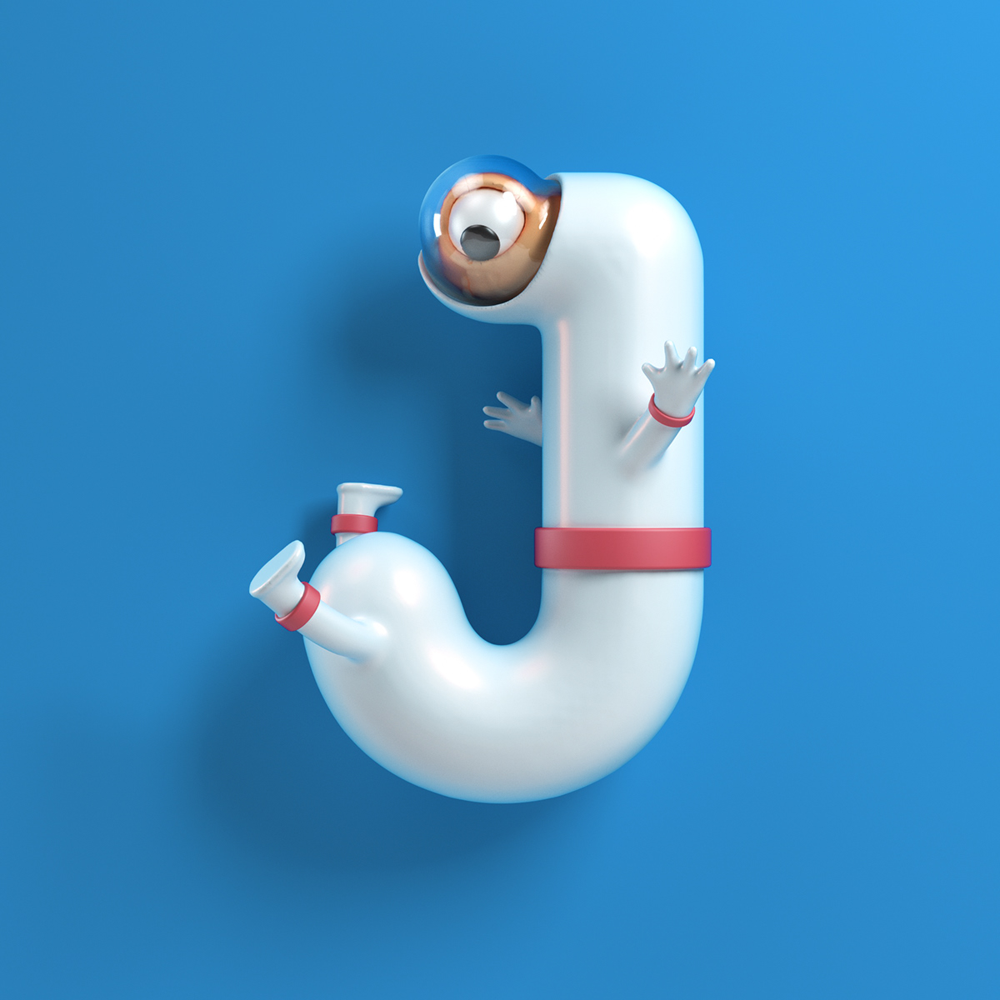
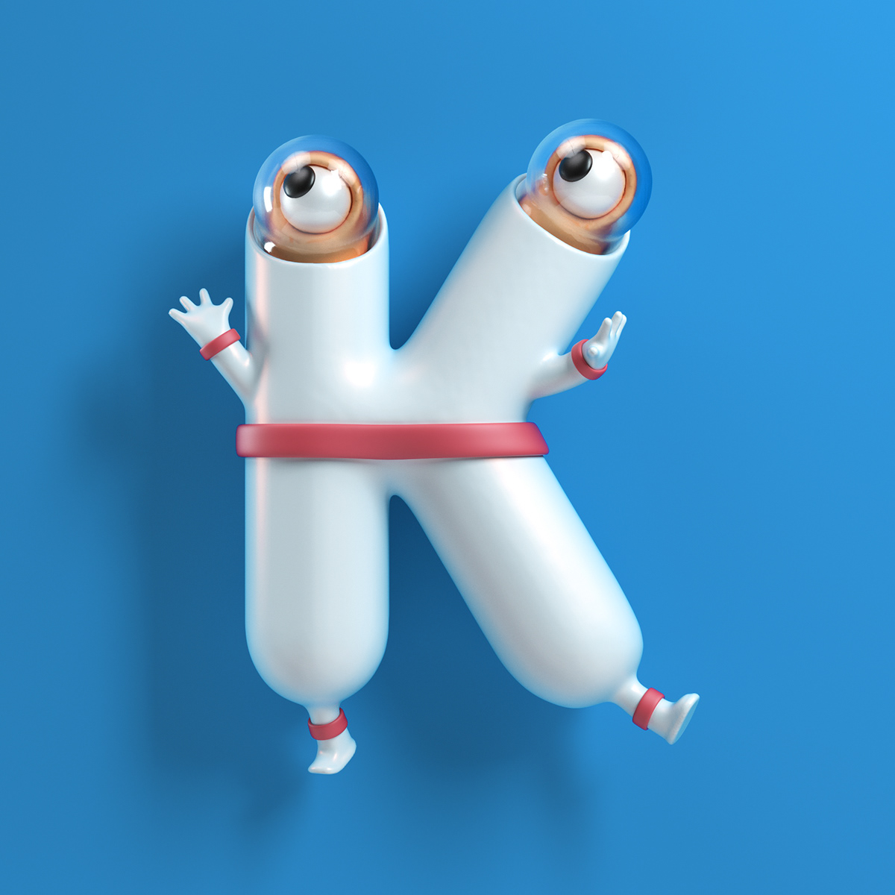
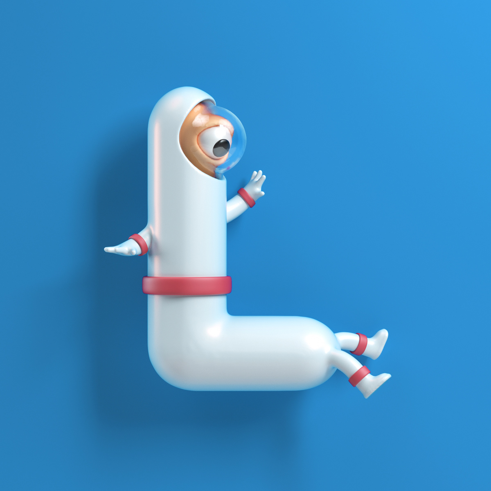
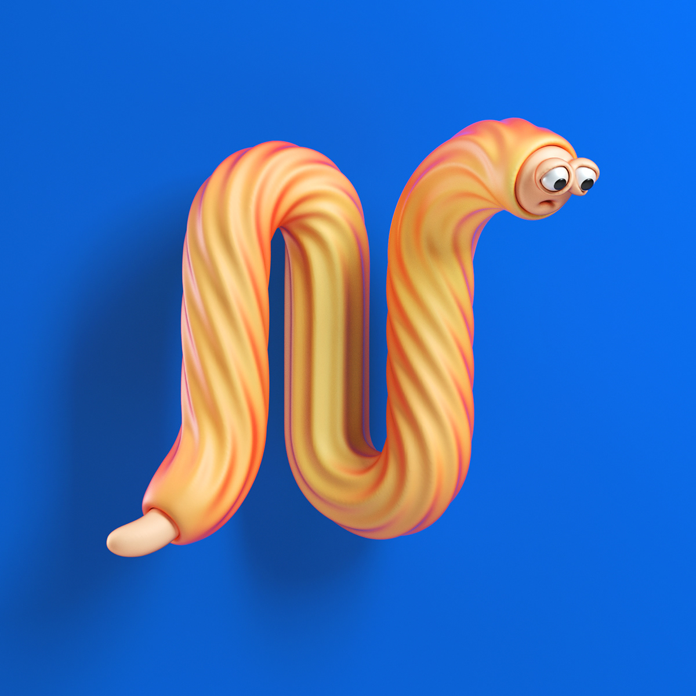
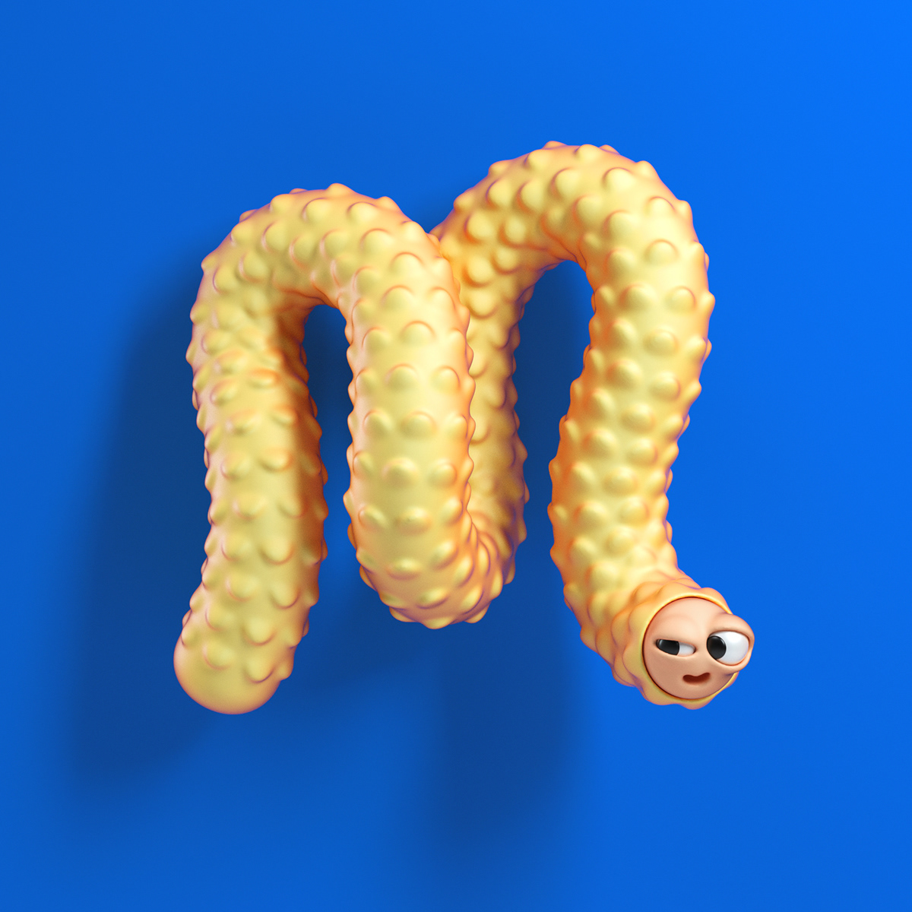
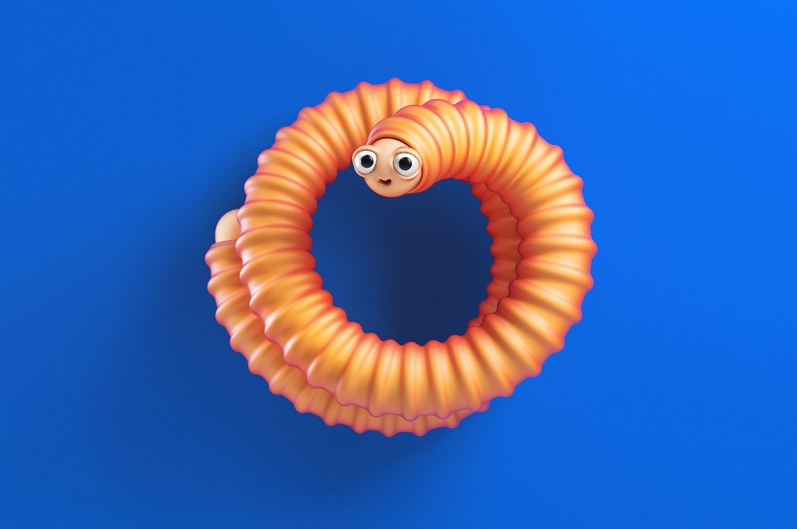

Yippiehey is the alias of german designer and illustrator Jacob Eisinger who specialises in 3D illustration. Working in the industry since 2008 and doing 3D/CGI since 2012, he also gained experience in internationally known studios. Jacob is now focusing on freelance work to bring your project to the next dimension. Jacob’s skills and experience cover a wide variety of styles and techniques, but the past years he has been specialising in colourful illustrations and character design. Yippiehey’s illustrations are full of fun details; smiles and good vibes guaranteed!      